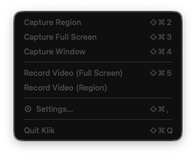

Always close, never in the way
One quiet menu.
Every capture.
Grab a region, window or full screen. Record video with system audio and your microphone.
⇧⌘2 · capture regionAlways close, never in the way
Grab a region, window or full screen. Record video with system audio and your microphone.
⇧⌘2 · capture region
Global shortcuts · no account · no telemetry